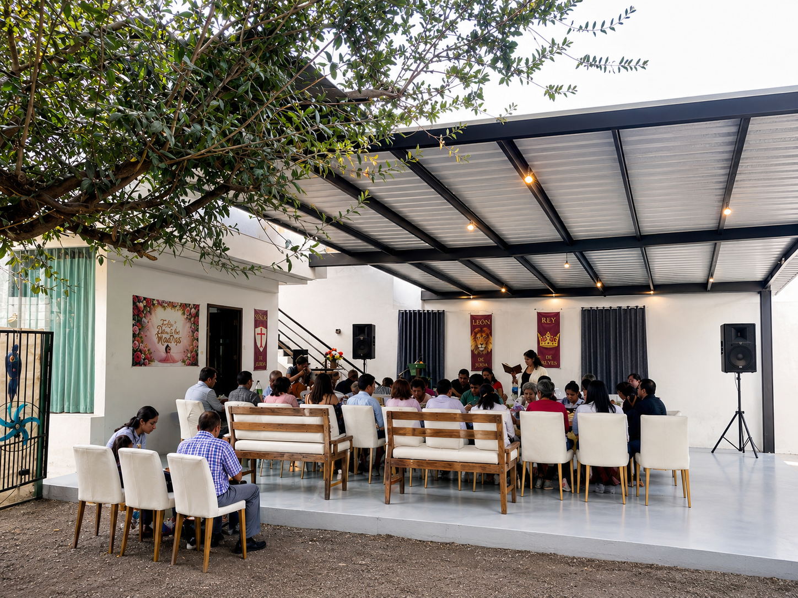
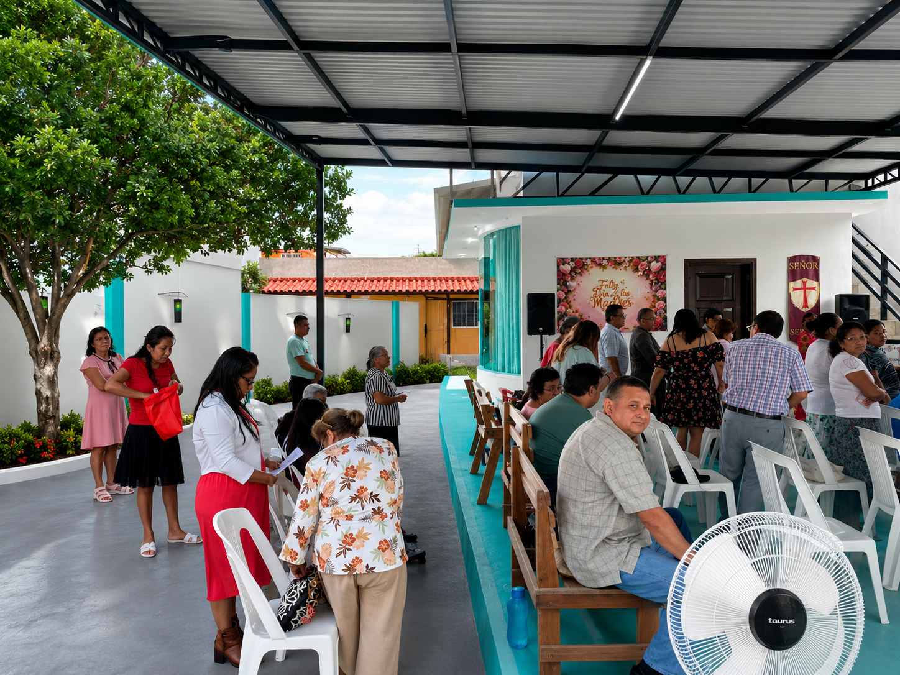
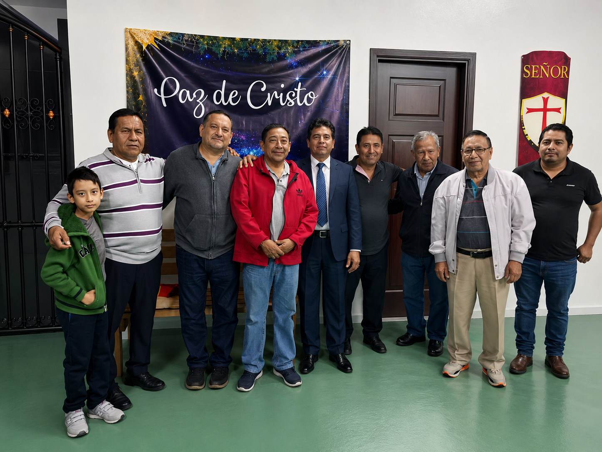
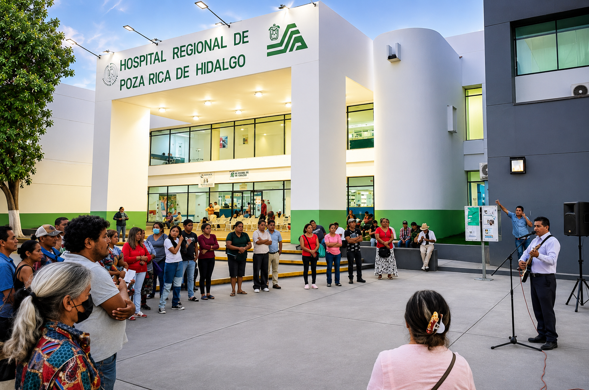

En Esperanza y Misericordias de Jesucristo recibimos a personas de todas las edades: niños, jóvenes, adultos y adultos mayores. Todos son bienvenidos en la mesa del Señor.
Nos caracteriza el amor fraternal y la unidad. Creemos que la Iglesia es el cuerpo de Cristo y cada miembro es indispensable. Aquí encontrarás amigos, mentores y una familia que camina contigo en la fe.


El Pastor Luis Alberto nació en Poza Rica de Hidalgo, Veracruz. Desde joven sintió el llamado de Dios para servir a Su pueblo y dedicó su vida al estudio profundo de las Escrituras. Se formó en teología bíblica con el firme convencimiento de que la Palabra de Dios es suficiente para transformar vidas.
Con más de dos décadas de ministerio, ha guiado a la congregación Esperanza y Misericordias de Jesucristo con humildad, integridad y un corazón pastoral genuino. Su enseñanza expositiva, verso a verso, ha formado discípulos firmes en la fe dentro y fuera de la región.
"Predicar a Cristo crucificado y resucitado, edificar la Iglesia en la sana doctrina y extender el Reino de Dios a toda persona, sin importar su origen, edad o condición."
Somos una iglesia cristiana evangélica que cree en la autoridad de las Escrituras y en el evangelio de Jesucristo. Nuestra misión es glorificar a Dios haciendo discípulos de todas las naciones, comenzando en Poza Rica y el norte de Veracruz.
Enseñamos expositivamente la Palabra de Dios, verso a verso.
Cristo murió por nuestros pecados y resucitó para nuestra justificación.
Nos amamos unos a otros y crecemos juntos en la fe.
La oración es el aliento de nuestra iglesia y nuestra dependencia de Dios.

Creemos que la fe sin obras es muerta. Por eso, como iglesia nos movilizamos constantemente para llevar la esperanza de Cristo a quienes más lo necesitan.
Visitamos pacientes y familias ofreciéndoles apoyo espiritual, oración y los sagrados alimentos para el cuerpo y el alma.
Organizamos colectas y regalamos prendas a familias en zonas vulnerables de Poza Rica y sus alrededores.
Extendemos nuestra mano a los más necesitados a través de brigadas de servicio, alimentos y acompañamiento integral.
C. 5 Oriente, Independencia, 93300 Poza Rica de Hidalgo, Ver., México